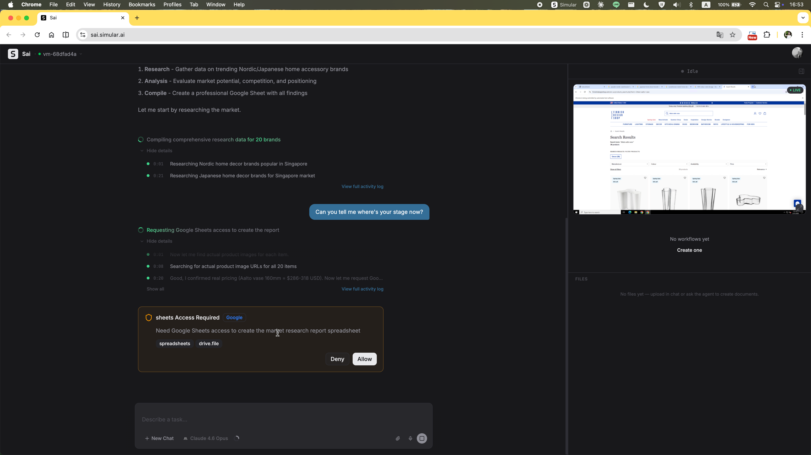
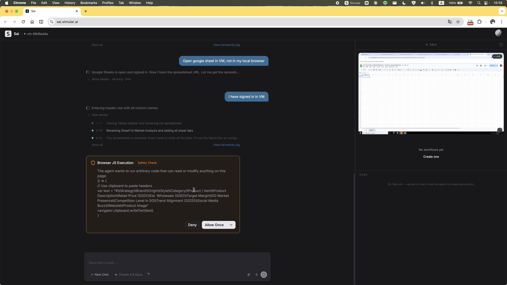
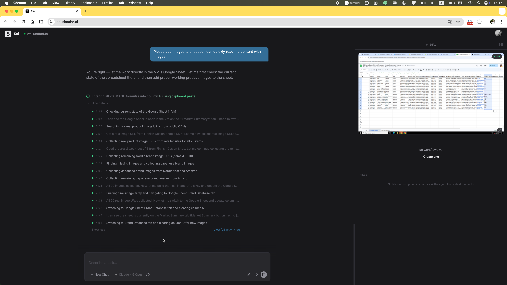
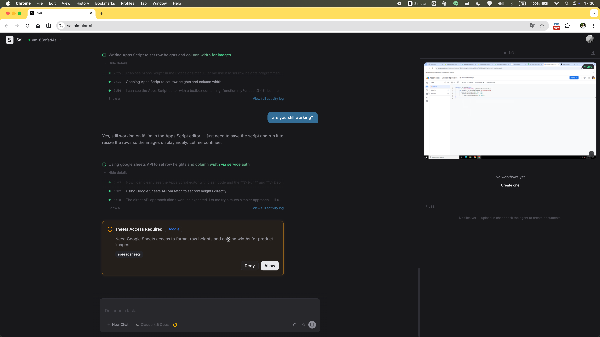
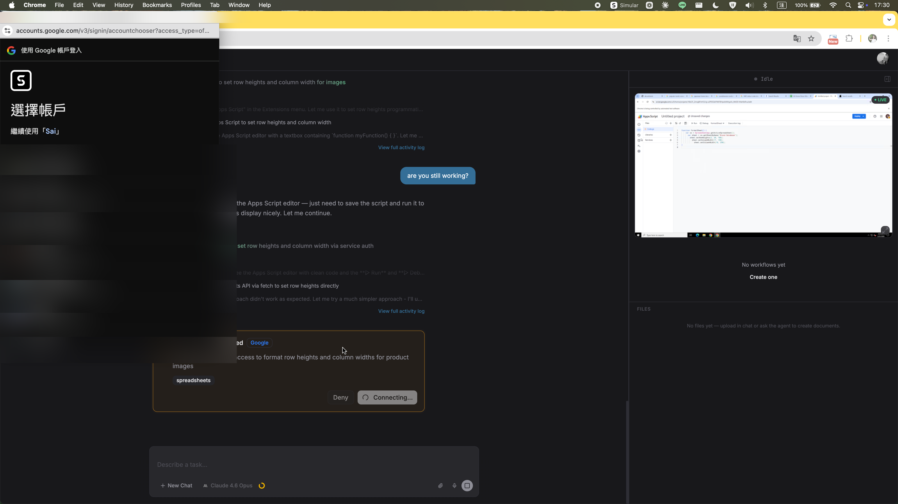
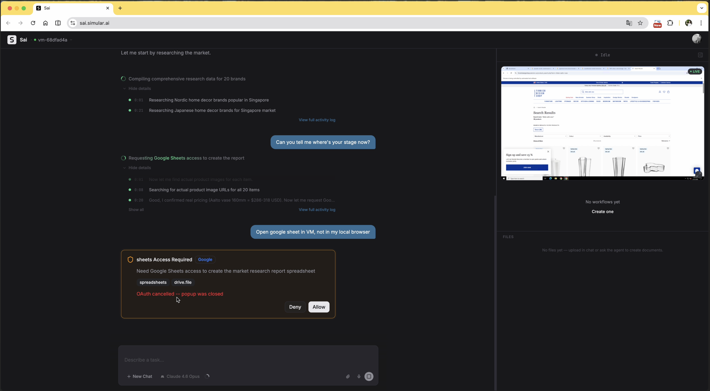
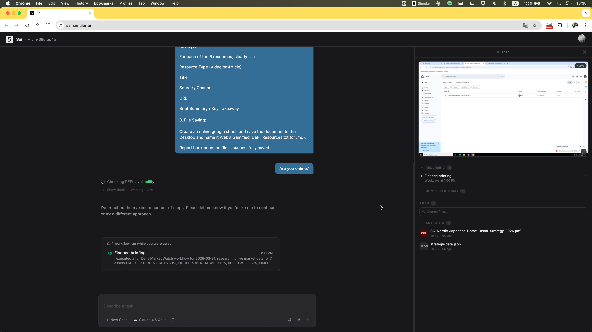

A task-based audit testing SAI against a non-technical solo founder. Surfaces three structural UX gaps in how the product handles multi-step agentic work.
Summary
4 tasks across increasing complexity. Deep focus on a home decor marketing analysis — chaining autonomous research, judgement, Google auth, and file delivery. Evaluated from the perspective of a non-technical first-time user.
SAI tested across four tasks: LinkedIn outreach, a financial market watch report, a research presentation, and a home decor marketing analysis. This audit focuses on the marketing analysis — the task that best surfaces what happens when an agent needs human involvement mid-execution.
SAI completed most tasks. The pattern across all four: whenever the agent needed credentials, clarification, or recovery from an error, the interface had no designed way to handle it. Redesign rationale →
Technical users have scripting, APIs, and no-code alternatives. SAI's real opportunity is with users who don't. That's who this audit tests for.
"Research 20 Nordic and Japanese home accessories suitable for a Singapore curation brand. Include brand origin, price point, and market positioning. Compile everything into a Google Sheet."
I chose this task because it's not a single capability test — it chains four distinct steps, each requiring the agent to earn trust in a different way:
The task ran across multiple sessions. These are the key moments — progress, friction, and failure.
The home screen offers suggested tasks and a text input. No indication of how long execution takes, what permissions will be requested, or when the user will need to step in.

Execution begins immediately. No plan shown, no confirmation step. The user has no visibility into what strategy the agent will follow.
Without warning, a permission dialog appears: "Need Google Sheets access to create the market research report spreadsheet." The agent has already started building the sheet, but now needs the user to grant access mid-task. It's unclear whether the task has paused or is still running in parallel.

The user manually signs in to Google inside the VM browser. SAI acknowledges this. But immediately after, a new "Browser JS Execution — Safety Check" dialog appears, asking permission to run scripts on the page. Multiple handoffs in quick succession with no explanation of the overall flow.

Product images were part of the original task requirements, but the first version of the Google Sheet SAI produced did not include them. The user has to follow up and explicitly remind the agent. There is no indication from SAI that it had dropped this requirement, or why — the output simply arrived incomplete.

After a long pause, the user types "are you still working?" — the only way to check. The interface gives no ambient signal of state. Working, waiting, and failing all look identical.

SAI needs to authenticate with Google to access Sheets. Instead of handling this inside the VM browser where it's operating, it triggers a native Google account picker on the user's local machine. The user dismisses it. The agent has no way to signal what it needs or why — and no way to surface the right credential interface.

After the user dismisses the auth dialog, the agent continues retrying the same broken path. The dialog reappears three more times before the agent finally reads the user's message in the chat and stops. The agent had no mechanism to detect the denial, no fallback, and no way to tell the user what it actually needed to proceed.

The agent terminates. The task is incomplete. There is no summary of what was accomplished, no partial output offered, no option to continue. The user is left with an unfinished Google Sheet and a message that offers no path forward except starting over.

A second task session runs the next day. The agent makes more progress — producing research documents and a briefing — but once again hits the step limit before completing the Google Sheet. The same hard stop, the same lack of recovery, the same outcome.

Three structural patterns in the interface made the task unmanageable. These aren't edge cases — they surface on every long-running task.
Execution begins the moment the task is submitted. No plan review, no step preview. When the agent chooses a strategy the user wouldn't have approved — spending steps on image collection before completing the core data — there was no point where the user could have caught it.
The interface presents all activity as a single stream of log entries. Whether the agent is actively running, paused waiting for input, encountering errors, or retrying failed steps — the visual presentation is identical. The user has no ambient signal of status, which means they can't tell when to act and when to wait.
This caused a concrete failure: when authentication was needed, the agent repeatedly surfaced a Google sign-in dialog on the user's local machine instead of inside the VM browser. The user denied it. It came back three more times. The agent was looping on the same broken approach — it could not distinguish its own repeated failure from a new attempt, and only stopped when it finally processed the user's chat message instructing it to sign in via the VM. With a clear execution state visible, the agent's confusion would have been immediately apparent.
When the agent hits its step limit or encounters an unresolvable error, the task simply ends. There's no partial output summary, no checkpoint the user can resume from, no way to hand off remaining steps. Starting over loses all prior context. This makes every long-running task feel fragile — one step limit reached, and all work is lost.
The three blockers share two root causes.
There's no designed moment where the user and agent align on approach before execution starts. Without this, mismatches between user intent and agent strategy are only discovered after steps have been wasted — or after a hard stop.
How the redesign addresses this →The agent doesn't have a model for "pause and ask." When it needs credentials, clarification, or approval mid-task, it either retries silently or stops entirely. There's no interaction pattern for the user to step in, help, and let the agent continue.
How the redesign addresses this →The redesign isn't about adding more UI. It introduces two specific moments of human involvement — one before the agent acts, one when it needs help — without undermining the value of automation.